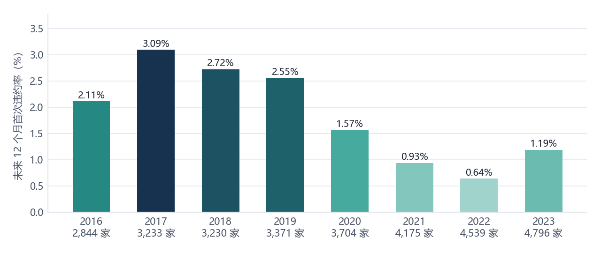
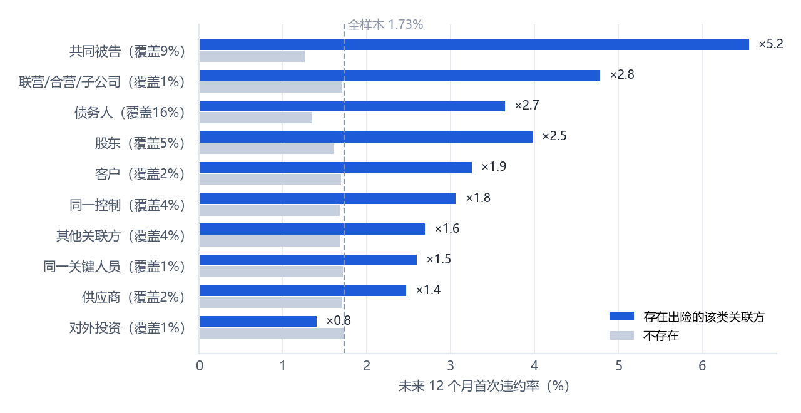
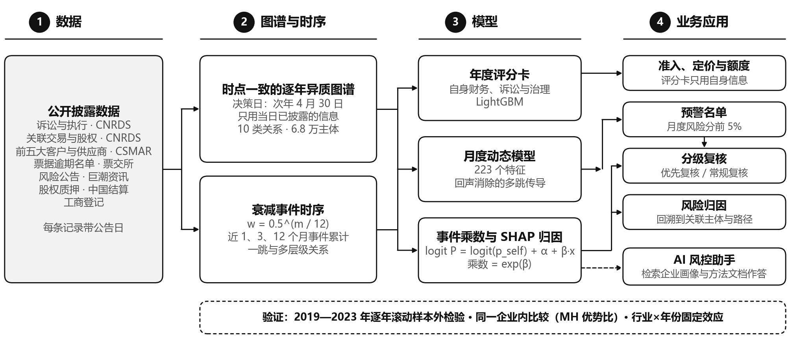
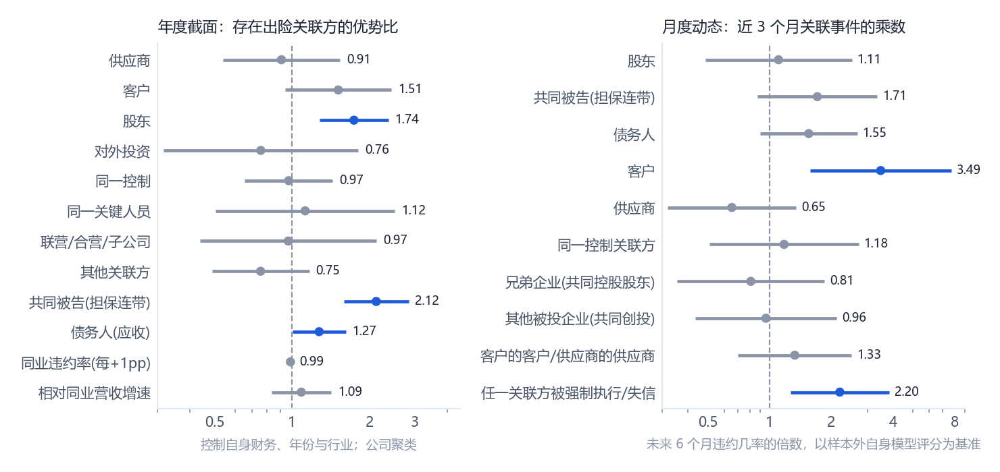
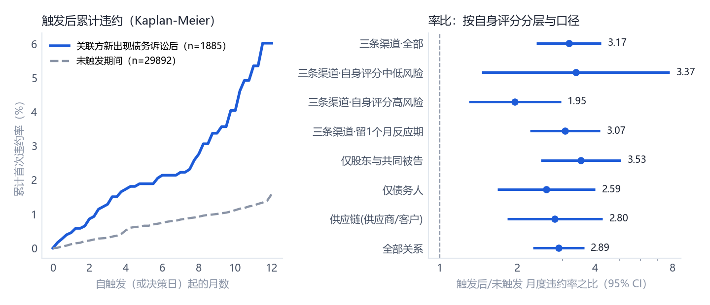
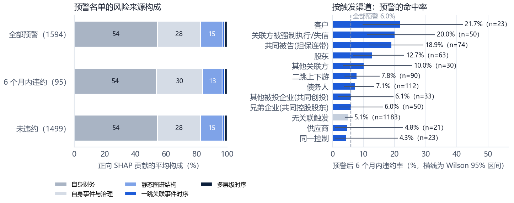
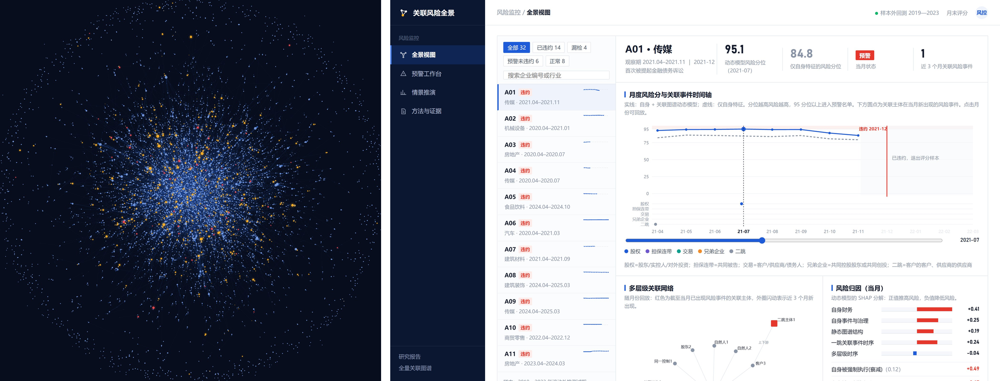

1数据介绍
1.1 代理样本与数据来源
代理样本取 A 股非金融上市公司：其上下游、股权、关联交易与诉讼执行全部来自强制披露，每条记录带公告日，可完整还原授信决策日可见的信息（表 1）。强制执行、查封冻结和失信事件从诉讼公告的执行情况字段解析得到（15,550 条带日期记录）。票据逾期信息取自上海票据交易所票据信息披露平台：票交所 2026 年 2 月起不再单独发布承兑人逾期名单，我们从平台取回 44 期信用信息未披露名单，从网络档案馆取回 5 期承兑人逾期与持续逾期名单（2021-12—2023-07），共 15.0 万条、2.5 万家企业，其中 2,356 个是样本企业的关联方。我们还从巨潮资讯网抓取股票与债券栏目的公告标题，按关键词提取逾期、冻结、违规担保、破产重整和立案调查事件，从东方财富逐月取回中国结算口径的股权质押比例（4.2 节）。
| 数据 | 来源 | 覆盖期 | 记录数 | 用途 |
|---|---|---|---|---|
| 前五大客户/供应商、集中度 | CSMAR 供应链研究数据库 | 2001—2025 | 59.3 万 | 供应商、客户边；供应商集中度 |
| 前十大股东 | CNRDS | 2014—2025 | 49.7 万 | 股东、对外投资、兄弟企业 |
| 关联交易 | CNRDS | 2000—2026 | 49.3 万 | 同一控制、关键人员、联营合营等边 |
| 诉讼仲裁（含执行情况） | CNRDS | 2014—2025 | 12.6 万 | 违约标签；被诉、强制执行、失信事件 |
| 违规处罚 | CNRDS | 2014—2025 | 2.5 万 | 风险事件 |
| 偿债与盈利能力（季度） | CNRDS | 2014—2025 | 各 19.6 万 | 自身财务、最新季报 |
| 机构持股、重要股权交易 | CNRDS | 2014—2025 | 4.9/24.4 万 | 治理与减持 |
| 申万行业分类历史（自行下载） | 申万宏源研究官网 | 1990—2026 | 1.3 万 | 行业、同业竞争 |
| 上市公司名录与退市名单（自行下载） | 沪深北交易所 | 截至 2026-09 | 5,932 家 | 全称对齐、上市日期 |
| 票据承兑人名单（自行抓取） | 上海票据交易所票据信息披露平台 | 2021-12—2026-08 | 15.0 万 | 关联方与自身的票据逾期、信息未披露事件 |
| 公告标题风险关键词（自行抓取） | 巨潮资讯网股票与债券栏目 | 2015—2025 | 1.7 万 | 自身与控股股东层面的逾期、冻结、违规担保等事件 |
| 股权质押比例（自行抓取） | 东方财富数据中心（转载中国结算周报） | 2015-12—2025-12 | 31.9 万 | 月末股权质押比例 |
| ST 变动；工商登记（本地库） | CSMAR；全国工商注册企业库（2024-12） | 1998—2025；截至 2024-12 | 1,512；8.8 万家 | 新被 ST；非上市节点的所在地与规模 |
| 地震、台风、气象站月值（自行下载） | USGS；IBTrACS；NOAA GSOM | 2015—2025 | 350 次；93 个；217 站 | 省-月灾害与极端天气冲击 |
注：CNRDS 为中国研究数据服务平台，CSMAR 为国泰安数据库；USGS 为美国地质调查局地震目录，IBTrACS 为国际台风最佳路径数据集，NOAA GSOM 为美国国家海洋和大气管理局的全球气象站月值。
1.2 违约标签与评分时点
年度口径的决策时点 D_t 取 t+1 年 4 月 30 日（t 年年报披露截止日），特征只用该日以前公开的信息，标签窗口为其后 12 个月。违约定义为企业本身或其子公司、孙公司、分公司以被告身份被提起金融债务诉讼（金融借款、借款、票据追索、融资租赁、保证与担保追偿、债券交易），原告主要是银行、保理和融资租赁公司，含义接近贷款逾期后的司法催收。前 24 个月内已被提起过此类诉讼的企业不进入当年样本，模型预测首次违约。剔除银行与非银金融后，样本为 2016—2023 年 29,892 个企业-年、517 次违约（1.73%）。月度口径用同一批企业，每月月末重新评分，预测未来 6 个月首次违约（35.6 万个企业-月，3,024 个正例）。评估一律采用 2019—2023 年逐年滚动外推：每一年用此前年份训练、前一年验证、当年测试。
1.3 关联图谱与风险事件
图谱按观察年构建。上市公司用股票代码标识，非上市企业、自然人和机构用规范化全称标识；全称字典合并交易所名录、供应链中标注为上市公司的对手方和违规处罚对象，共 6,837 个全称对应 5,896 个代码。名称只做全角半角、括号和空白的等价变换，不做子串匹配。表 2 给出关系规则，每年的图有 4.0 万至 6.8 万个节点、4.7 万至 8.0 万条边。
| 关系 | 构造规则 | 边数(2023) | 样本覆盖率 |
|---|---|---|---|
| 供应商 / 客户 | 年报前五大，剔除“客户一”“A 公司”“**”等匿名名称；权重为采购或销售占比 | 11,304×2 | 22.1% |
| 股东 / 对外投资 | 前十大股东，剔除基金、券商、保险、QFII、主权基金、创投与名义持有人；自然人仅留持股≥5% | 16,934×2 | 99.2% |
| 同一控制 | 36 个月内关联交易公告中的同一实际控制人、控股股东、母公司、同一集团 | 31,920 | 45.9% |
| 同一关键人员 | 关联交易公告中的同一董监高或关键管理人员 | 4,616 | 33.4% |
| 联营/合营/子公司 | 关联交易公告中的联营、合营、参股与子公司 | 7,374 | 26.1% |
| 其他关联方 | 关联交易公告中其余关联方 | 32,602 | 59.9% |
| 共同被告 | 企业自身被诉案件中的其他被告（担保人、被担保人、连带责任方） | 13,098 | 19.6% |
| 债务人 | 企业作为原告起诉的金融债务或经营性欠款对象 | 6,770 | 16.4% |
注：“×2”表示该类关系与其反向关系（客户、对外投资）各计一次；覆盖率为存在该类邻居的企业-年占比。
每个节点带有带日期的风险事件：作为被告卷入金融债务诉讼、经营性欠款诉讼（货款、工程款、买卖合同等）、被强制执行或查封冻结、失信与限制高消费、违规处罚。年度口径按 12 个月半衰期加权，月度口径按 3 个月半衰期加权并保留近 1、3、12 个月计数。度数超过 50 的非上市实体（大型央企客户、地方国资平台等）只参与一跳计算。
2描述性分析
违约率在 2017 年最高（3.09%），2022 年最低（0.64%），2023 年回升到 1.19%（图 1），与 2018—2020 年民营企业债务集中暴露、2021 年后房地产链条风险释放的时间线吻合。房地产违约率 4.60%，建筑装饰 3.02%，商贸零售 2.88%。违约企业资产负债率中位数 0.60，正常企业 0.39。

图 2 比较有、无出险关联方时的违约率。共同被告出险时违约率为 6.56%，是无此类邻居企业的 5.2 倍；联营合营子公司 2.8 倍，债务人 2.7 倍，股东 2.5 倍，客户 1.9 倍，供应商 1.4 倍。3.2 节在控制自身财务与行业后检验这些差异。

3模型分析
3.1 技术框架：时点一致的异质图谱与事件时序
模型在企业自身评分卡之外给出预警信号和风险归因两类输出，全流程见图 3。

流程由四项技术支撑。一是时点一致的逐年异质图谱：以每年 4 月 30 日为决策日，只用当日已披露的年报、诉讼与公告构建 10 类关系，杜绝信息穿越。二是衰减事件时序：关联方事件按 w = 0.5^(m/12) 随间隔月数 m 衰减，累计近 1、3、12 个月的被诉、被执行与失信事件，覆盖一跳关系与兄弟企业、共同创投、客户的客户、供应商的供应商等多层级关系，月度模型共 223 个特征。三是回声消除的多跳传导：在对称归一化邻接矩阵 Â 上传播风险分 s，企业 i 经第一跳关系 r 收到的二跳风险为
h2_r(i) = Σ_j W_r(i,j) · [ Σ_k Â(j,k)·s_k − Â(j,i)·s_i ]
减去的一项消除 i→j→i 的回声，企业自身作为当事人的案件不计入关联事件。四是样本外事件乘数与 SHAP 归因：以自身模型的样本外违约概率 p_self 为偏移项，估计关联事件 x 的违约几率乘数 exp(β)，再用 SHAP 把每条预警拆成自身财务、自身事件、静态图谱、一跳时序和多层级时序五类来源，回溯到具体关联主体与路径。
logit P(y=1) = logit(p_self) + α_年份 + β·x，事件乘数 = exp(β)
评分模型用 LightGBM，验证集取前一年的前 6 个月，标签窗口不越过测试期起点；月度模型每月给出风险分，前 5% 进入预警名单。
3.2 风险从哪里来：传导渠道与事件乘数
图 4 左栏把每类关系上是否存在出险关联方作为解释变量，控制 11 个自身财务与诉讼变量及年份、行业固定效应（Logit，公司聚类标准误）。股东出险的优势比为 1.74（1.28—2.36），共同被告（担保连带）出险为 2.12（1.59—2.84）；改用行业×年份固定效应的线性概率模型吸收共同冲击后，两者使违约概率分别提高 1.59 个百分点（0.67—2.50） 和 2.21 个百分点（1.07—3.35），约为基准违约率的 92% 和 128%。债务人渠道在 Logit 中为 1.27（1.00—1.61），在行业×年份固定效应下降到 0.03 个百分点（-0.53—0.59），其原始关联来自行业共同冲击。供应商、同一控制、同一关键人员和对外投资渠道没有传导效应。
右栏换成月度样本外口径，以自身模型的违约几率为基准：近 3 个月客户新被起诉使未来 6 个月违约几率升至 3.49 倍（1.57—7.72），关联方被强制执行或失信升至 2.20 倍（1.26—3.84）；股东与共同被告事件的短期乘数（1.11、1.71）不显著。股权与担保链决定企业的长期风险暴露，客户出事与关联方被执行是最及时的信号。

3.3 三条业务传导机制的检验
上游供应商提价、投资方其他被投项目出险、竞争对手突破三条业务传导机制逐条构造代理变量，在年度截面上用线性概率模型检验（附表 A5，控制与 3.2 节相同的自身变量和行业×年份固定效应）。上游供应商提价：毛利率挤压及其与供应商集中度的交互均不显著，供应商高度集中本身使违约概率提高 0.64 个百分点。投资方其他被投项目出险：兄弟企业与共同创投的其他被投企业出险均不显著，月度乘数为 0.81 和 0.96。竞争对手突破：同业高速增长者占比每高 1 个标准差，违约概率提高 0.34 个百分点；该效应不集中在增速落后的企业，反映的是行业过热。
3.4 关联信息该用在哪里：评分、预警与多层级路径
图谱特征对全样本排序的提升很小（附表 A2，2019—2023 年逐年滚动外推）。年度模型加入一跳、多跳、结构和同业特征后 AUC 增量不超过 +0.0023，置信区间均跨零，关系图卷积网络为 -0.0068；月度模型加入全部图谱信息后为 +0.0031，2022、2023 年为 +0.005 和 +0.010。关联事件集中在少数企业，提升落在名单头部与触发时点（4.1 节），因此准入与定价沿用自身特征评分卡，图谱评分用于贷中预警与归因。
多层级隐性传导路径挖到第二层：兄弟企业、共同创投的其他被投企业、客户的客户与供应商的供应商。测试期内这三类主体近 3 个月出事、而一跳关联方没有动静的企业-月共 16,874 个，其后 6 个月违约率 0.41%（0.33%—0.52%），低于完全没有关联信号的 0.55%；一跳关联方出事的月份则是 1.65%。企业内比较中，仅多层级信号的优势比为 1.04，一跳为 1.50。两层合计覆盖 33.3% 的违约事件（一跳 26.3%，仅多层级 7.0%；未违约企业-月只有 12.4%）。多层级路径单独出现时不提高违约概率，它的作用是解释风险从哪条链条传来（4.4 节案例）。
4应用验证
4.1 预警效果
贷中监控模拟从决策时点起跟踪每家企业的股东、共同被告和债务人，一旦有关联方新被提起金融债务或欠款诉讼即视为触发（企业自身为当事人的案件不计入），比较触发后与未触发期间的月度首次违约率。触发后为 4.29‰，未触发为 1.35‰，率比 3.17（2.37—4.23）；按行业×年份分层的 Mantel-Haenszel 率比为 3.03（2.20—4.01），按样本外自身评分分层后，中低风险段为 3.37（1.46—7.79），高风险段为 1.95（1.30—2.95）。从触发到违约的中位时间为 3.9 个月（四分位 1.8—8.0），给银行留出 1 个月反应期后率比仍为 3.07（图 5）。月度动态模型每月把评分前 5% 的企业列入预警名单，名单 6 个月内违约率为 5.6%，是全样本 0.60% 的 9.4 倍，覆盖 54.4% 的违约事件（仅自身模型为 51.6%），首次预警中位提前 5.1 个月。

同一家企业内部比较同样成立：关联方近 3 个月出事的月份，未来 6 个月违约的优势比是该企业其他月份的 1.50 倍（1.07—2.15，按企业分层的 Mantel-Haenszel，1,426 家企业）。横截面上出事月份违约率 1.65%、其余月份 0.55%，差距一部分来自事件时点，其余来自风险企业更常拥有出事的关联方，两者都被预警名单直接利用。
名单规模由复核人力决定（附表 A3）：每月前 1% 是 41 家、命中 12.4%（基准的 20.7 倍）、覆盖 28% 的违约；前 5% 是 205 家、覆盖 54%；前 10% 覆盖 67%。同样规模下，加入图谱信息比仅用自身信息多覆盖 4 至 8 次违约。
4.2 补充数据：公告、股权质押、票据名单与自然灾害
表 3 检验补充数据在自身模型之外还有没有预警信息，做法同 3.2 节：以样本外自身模型的违约几率为基准估计事件乘数，另控制年份（41 项检验见附表 A4）。股东层面的公告覆盖最广：近 12 个月股东所持股份被司法冻结的企业-月有 10,360 个，事件乘数 3.18（2.28—4.45）；551 起违约中有 258 起（47%）在此前 24 个月内出现过这类公告，中位提前 7 个月。3.2 节中股东被诉的乘数不显著，股份被法院冻结是更晚、更确定的信号。企业自身的违规担保或担保逾期、银行账户被冻结和债务逾期公告乘数更高（9.6、5.3 和 3.9 倍），但各自只覆盖几百到两千多个企业-月。
上市关联方出现上述任一事件时，乘数为 2.24（1.36—3.67）；只看一跳关联方没有诉讼动静的月份仍为 2.03（1.05—3.93），公告和诉讼是两条不同的信息源。企业自己上过票据名单时为 3.05（1.56—5.97）；关联方上过逾期名单时的事件乘数只有 1.29（0.55—3.05），这些企业的自身评分本来就高。
省级自然灾害没有增量：本省近 3 个月受灾的事件乘数为 1.01（0.76—1.35），外省关联方所在省受灾为 1.16（0.91—1.49）（12 项灾害检验见附表 A4）。
| 类别 | 信号 | 暴露企业-月 | 6 个月违约率 | 事件乘数 [95% CI] |
|---|---|---|---|---|
| 企业自身公告 | 违规担保或担保逾期 | 773 | 12.4% | 9.58 [4.94, 18.59] |
| 银行账户被冻结 | 2,407 | 7.7% | 5.30 [3.26, 8.61] | |
| 控股股东层面 | 股东所持股份被司法冻结 | 10,360 | 4.5% | 3.18 [2.28, 4.45] |
| 股东质押平仓或被动减持 | 4,182 | 4.9% | 2.24 [1.35, 3.72] | |
| 股权质押比例超过 30% | 10,188 | 1.9% | 1.71 [1.18, 2.48] | |
| 上市关联方 | 关联方出现上述任一公司层面事件 | 7,639 | 1.8% | 2.24 [1.36, 3.67] |
| 票据名单 | 企业自己上过承兑人逾期或信息未披露名单 | 2,500 | 3.7% | 3.05 [1.56, 5.97] |
| 关联方上过承兑人逾期或持续逾期名单 | 4,005 | 1.7% | 1.29 [0.55, 3.05] | |
| 自然灾害 | 本企业所在省发生地震、台风或极端降水 | 62,308 | 0.5% | 1.01 [0.76, 1.35] |
| 外省关联方所在省发生上述灾害 | 131,340 | 0.8% | 1.16 [0.91, 1.49] |
注：以样本外自身模型的违约几率为 offset 的 logit，控制年份，企业聚类标准误；灾害两行改控制月份与省份（本地）或关联方覆盖省份数（外省）。公告与名单取近 12 个月，灾害取近 3 个月；测试期 6 个月违约率 0.60%。
4.3 归因效果
图 6 左栏把 1,594 条首次预警的正向 SHAP 贡献拆开：自身财务平均占 54%，自身事件与治理 28%，静态图谱结构 15%，关联事件时序 3%，多数预警由企业自身的财务恶化驱动。右栏按触发渠道看后续命中：近 3 个月客户被起诉、关联方被强制执行或失信、担保连带方被起诉的预警，6 个月内违约率分别为 21.7%（n=23）、20.0%（n=50） 和 18.9%（n=74），无关联触发的预警为 5.1%（n=1183）。
把这三类合为“优先复核”，132 条预警的命中率为 15.9%（10.6%—23.1%），是其余预警（5.1%）的 3.1 倍，占全部命中的 22%。分段结果一致：2019—2021 年为 17.3% 对 5.9%，2022—2023 年为 13.7% 对 4.0%。

4.4 案例：一条二跳传导路径
案例企业是一家建筑装饰企业，决策时点仅用自身特征的年度风险分位为 79.5%，加入关联特征后升至 86.4%。它的前五大客户之一是一家中间企业，这家企业又是一家已违约房地产上市公司的前五大供应商。之后案例企业被提起借款合同纠纷诉讼。这条“房企违约 → 总包 → 分包”的路径不出现在案例企业自身的任何报表科目里。下图可切换三个案例；更完整的逐月回放见产品原型。
5产品思路
产品围绕两个问题设计：关联方出事时哪些客户需要马上复核，以及每个客户的风险从哪里来。全部功能已上线（gaaiyun.github.io/graph-credit-risk，界面截图见附录 B）。预警工作台每月列出动态评分前 5% 的客户，按触发渠道分两档：客户或担保连带方被起诉、关联方被执行或失信的列为优先复核（历史命中率约 16%），其余为常规复核（约 5%），可按复核等级、渠道、行业和年份筛选。工作量上，名单每月约 205 家，其中首次进入名单的约 27 家，需要优先复核的约 2 家。客户全景视图展示股权、担保、交易和二跳关联网络，按月回放风险事件，并给出风险分曲线与 SHAP 归因；情景推演在当前违约概率上叠加假设事件，按事件乘数给出调整后的概率和建议动作。全量关联图谱浏览器实名开放 2016—2023 年的每个主体，可按名称或代码定位，查看关联方、二跳传导路径、公告风险事件、历年股权质押和工商登记（图 8）。
AI 风控助手把图谱数据和方法文档变成可对话的入口。它常驻网站右侧，打开即停靠展开，可切换为浮窗、拖动调整大小或最小化，回答四类问题：企业风险情况（输入全称、简称或股票代码）、风险监测方法、测度口径与公式原理、报告内容。检索在浏览器端完成：先在 1.6 万个主体的名称索引中匹配公司名或代码，取回该主体的风险画像（出险与违约记录、样本外违约概率、公告事件、股权质押、票据名单和有风险的关联方），再从方法文档中检索最相关的段落；资料随问题发往服务端，由智谱 GLM-4.7-Flash 大模型流式作答。提示词限定模型只依据检索资料作答，企业数字只取自画像，引用全样本统计时注明口径，回答附参考来源。客户经理复核预警时可以直接问一家企业为什么进入名单，新员工可以直接查公式和口径。

业务上分三层落地。第一层是年度评分卡，只用自身财务、诉讼与治理变量做准入、定价和额度。第二层是关联事件预警与分级，是本方案的核心：为每个存量客户维护持股 5% 以上的股东与实际控制人、担保与连带责任方、前五大客户与主要应收对手方三类清单，每日拉取新增诉讼、被执行、失信和票据逾期事件，以及股东股份冻结、质押平仓和违规担保公告；优先复核的客户冻结未用额度并在 30 天内完成复核，常规复核的客户提高监测频率，触发客户中位提前 3.9 个月违约，足够完成处置。第三层是控制圈合并管控，把持股 20% 以上的控股关系与同一控制关系连成的控制圈合并计算敞口。迁移到行内经营类客户时图谱结构不变，只需替换数据源（附表 A6），并以行内 90 天以上逾期为标签重估渠道乘数与分级阈值；第二层只依赖外部公开事件，对缺少可信报表的经营类客户同样适用。
6总结结论
第一，关联事件是有效的贷中预警信号。股东、担保连带方或债务人新出现债务诉讼后，企业月度违约率升至未触发期间的 3.17 倍（同一家企业内部比较为 1.50 倍，1.07—2.15），中位 3.9 个月后违约；月度模型每月前 5% 的预警名单命中率为基准的 9.4 倍，提前约 5 个月覆盖 54% 的违约；股东股份被司法冻结（乘数 3.18）等公告提供增量信息。
第二，风险归因落到具体渠道，并决定复核优先级。风险沿股权与担保链传导，控制行业×年份共同冲击后仍然显著；客户或担保连带方被起诉、关联方被执行或失信触发的预警，命中率是其余预警的 3.1 倍。三条业务传导机制中，只有供应商集中度和同业过热两个代理变量显著；挖到第二层的多层级路径覆盖 7.0% 的违约，但单独出现时不提高违约概率（企业内优势比 1.04），只用于解释路径。
第三，图谱评分的价值落在名单头部和触发时点。全样本 AUC 增量仅 +0.003，但每月前 5% 的名单覆盖违约从仅用自身信息的 51.6% 提高到 54.4%，图谱事件触发的优先复核档命中率 15.9%。因此年度准入沿用自身评分卡，图谱评分用于贷中预警、归因和敞口管理。下一步用生存模型估计关联事件的动态影响，并在行内数据上重估渠道强度与分级规则。
附录 A稳健性与复现
| 检验 | 结果 |
|---|---|
| 传导渠道：行业×年份固定效应线性概率模型 | 股东 +1.59 个百分点（0.67—2.50）；共同被告 +2.21 个百分点（1.07—3.35）；债务人 +0.03 个百分点（-0.53—0.59） |
| 贷中预警：行业×年份分层 Mantel-Haenszel 率比 | 3.03（2.20—4.01） |
| 贷中预警：触发源拆分 | 股东与共同被告 3.53（2.47—5.04）；债务人 2.59（1.67—4.01） |
| 单次切分（测试 2022—2023）：M2 相对 M1 | ΔAUC +0.0066 [+0.0002, +0.0128]；滚动外推下为 +0.0008 |
| “干净”企业子样本（无自身被诉与违规记录） | 年度 M4 +0.0037 [-0.0153, +0.0219]；月度 D4 +0.0046 [-0.0078, +0.0197] |
| 替代标签：金额 ≥1000 万元 | M1 0.934 → M5 0.934（测试正例 71） |
| 替代标签：含经营性欠款诉讼 | M1 0.908 → M5 0.918（测试正例 404） |
| 逻辑回归对照（单次切分） | M1 0.940 → M5 0.924 |
| 图谱风险分叠加到对数几率（滚动外推） | ΔAUC -0.0084 [-0.0165, -0.0011] |
| 同一企业内比较（按企业分层 MH）：一跳关联事件 | 优势比 1.50（1.07—2.15），1,426 家企业两种月份都有 |
| 同一企业内比较：仅多层级信号（无一跳事件的月份） | 优势比 1.04（0.57—1.79） |
| 自身对照（SCCS，既触发又违约的 96 家） | IRR 0.62（0.37—1.10）；违约会牵出连带方诉讼，该设计低估效应 |
| 票据名单：关联方上逾期名单（同月×自身评分五分位分层 / 事件乘数） | 优势比 2.63（1.34—3.82），事件乘数 1.29（0.55—3.05）；企业自己上榜分别为 5.88（3.50—9.50）和 3.05（1.56—5.97） |
| 单次切分与滚动外推的逐年 AUC（M1 自身） | 2019、2020 年单次切分 0.993、0.989（样本内），滚动外推 0.845、0.816 |
| 口径 | 模型 | AUC | 增量 [95% CI] |
|---|---|---|---|
| 年度 | M1 自身特征 | 0.877 | — |
| 年度 | M2 +一跳关联 | 0.877 | +0.0008 [-0.0043, +0.0059] |
| 年度 | M3 +多跳传导 | 0.877 | +0.0005 [-0.0059, +0.0070] |
| 年度 | M4 +结构位置 | 0.879 | +0.0020 [-0.0053, +0.0093] |
| 年度 | M5 +同业竞争 | 0.879 | +0.0023 [-0.0054, +0.0096] |
| 年度 | R-GCN（基线：同构去边网络） | 0.868 | -0.0068 [-0.0139, +0.0004] |
| 月度 | D1 自身（含自身事件时序、最新季报） | 0.876 | — |
| 月度 | D2 +静态图谱 | 0.877 | +0.0009 [-0.0056, +0.0079] |
| 月度 | D3 +一跳关联事件时序 | 0.874 | -0.0028 [-0.0070, +0.0009] |
| 月度 | D4 +多层级时序（全部图谱信息） | 0.879 | +0.0031 [-0.0034, +0.0101] |
| 月度 | D1T 自身+关联时序（不含静态图谱） | 0.879 | +0.0022 [-0.0017, +0.0064] |
注：年度增量以 M1 为基线（R-GCN 以同构去边网络为基线），配对分层 bootstrap；月度 D2、D4、D1T 以 D1 为基线，D3 以 D2 为基线，按企业整簇 bootstrap。
| 名单比例 | 每月名单家数 | 名单 6 个月违约率（相对基准） | 覆盖违约事件（共 285 次） | 仅自身模型覆盖 |
|---|---|---|---|---|
| 前 1% | 41 | 12.4%（20.7 倍） | 81（28%） | 77 |
| 前 3% | 123 | 7.5%（12.6 倍） | 129（45%） | 122 |
| 前 5% | 205 | 5.6%（9.4 倍） | 155（54%） | 147 |
| 前 10% | 410 | 3.6%（6.0 倍） | 191（67%） | 188 |
注：每月按评分分位取名单；覆盖指违约发生前 6 个月内曾进入名单。
| 传导机制 | 代理变量 | 违约概率变化(百分点) | 95% CI |
|---|---|---|---|
| ① 上游供应商提价 | 毛利率挤压（每 1 个标准差） | +0.11 | [-0.19, +0.40] |
| 前五大供应商集中度高于中位数 | +0.64 | [+0.32, +0.95] | |
| 挤压 × 集中度高 | -0.09 | [-0.49, +0.31] | |
| ② 投资方其他项目出险 | 兄弟企业出险（共同控股股东/同一控制） | -0.47 | [-1.19, +0.24] |
| 共同创投/产业基金的其他被投企业出险 | -0.08 | [-0.46, +0.31] | |
| ③ 竞争对手突破 | 同业营收增速>30% 的企业占比（每 1 个标准差） | +0.34 | [+0.08, +0.61] |
| 高速增长者占比 × 本企业增速落后 | -0.34 | [-0.65, -0.04] |
注：线性概率模型，行业×年份固定效应，企业聚类标准误；基准违约率 1.73%。
| 本文使用的上市公司数据 | 经营类客户可用的替代数据 |
|---|---|
| 前五大客户与供应商 | 增值税发票、结算流水、供应链金融平台的交易对手 |
| 前十大股东 | 工商登记股东、实际控制人、受益所有人 |
| 关联交易公告 | 工商任职与对外投资（同一法定代表人、董监高交叉任职） |
| 诉讼公告与执行情况、票据承兑人名单 | 裁判文书、执行信息公开网（失信、限高、被执行）、票交所承兑人逾期与未披露名单（本文已用公开名单，机构可接接口） |
| 违约标签：首次被提起金融债务诉讼 | 行内 90 天以上逾期 |
| 类别 | 信号 | 暴露企业-月 | 违约率 | 事件乘数 [95% CI] | MH 优势比 [95% CI] | MH 分层 |
|---|---|---|---|---|---|---|
| 企业自身 | 债务逾期公告 | 666 | 14.0% | 3.86 [1.45, 10.26] | 12.82 [7.75, 24.78] | 月×评分 |
| 债券兑付违约公告 | 430 | 3.5% | 7.32 [2.38, 22.54] | 6.64 [1.39, 18.68] | 月×评分 | |
| 被列为失信被执行人 | 70 | 7.1% | 5.53 [0.50, 61.00] | 3.55 [0.00, 23.32] | 月×评分 | |
| 银行账户被冻结 | 2,407 | 7.7% | 5.30 [3.26, 8.61] | 7.28 [5.06, 10.85] | 月×评分 | |
| 违规担保或担保逾期 | 773 | 12.4% | 9.58 [4.94, 18.59] | 10.46 [6.36, 16.90] | 月×评分 | |
| 被申请破产或重整 | 1,902 | 4.5% | 1.71 [0.83, 3.53] | 3.69 [1.93, 5.44] | 月×评分 | |
| 被证监会立案调查 | 4,349 | 4.1% | 2.15 [1.25, 3.70] | 4.04 [2.83, 6.06] | 月×评分 | |
| 新被实施 ST / *ST | 2,666 | 9.6% | 3.19 [2.07, 4.91] | 7.40 [5.61, 10.48] | 月×评分 | |
| 控股股东 | 控股股东或实控人失信、破产重整或债务违约 | 745 | 3.9% | 1.61 [0.66, 3.94] | 2.98 [1.16, 6.08] | 月×评分 |
| 股东所持股份被司法冻结 | 10,360 | 4.5% | 3.18 [2.28, 4.45] | 5.15 [3.97, 6.52] | 月×评分 | |
| 股东质押平仓或被动减持 | 4,182 | 4.9% | 2.24 [1.35, 3.72] | 4.32 [3.06, 6.31] | 月×评分 | |
| 股权质押 | 股权质押比例 ≥ 30% | 10,188 | 1.9% | 1.71 [1.18, 2.48] | 1.74 [1.18, 2.46] | 月×评分 |
| 股权质押比例 ≥ 50% | 1,213 | 2.6% | 2.01 [0.88, 4.57] | 2.07 [0.62, 4.24] | 月×评分 | |
| 上市关联方 | 关联方：债务逾期公告 | 1,036 | 1.6% | 2.16 [0.74, 6.31] | 1.85 [0.39, 4.39] | 月×评分 |
| 关联方：债券兑付违约公告 | 116 | 0.0% | — | — | 月×评分 | |
| 关联方：被列为失信被执行人 | 199 | 10.1% | 11.83 [3.32, 42.11] | 8.09 [0.89, 19.05] | 月×评分 | |
| 关联方：银行账户被冻结 | 1,583 | 1.6% | 1.99 [0.78, 5.06] | 1.80 [0.57, 3.68] | 月×评分 | |
| 关联方：违规担保或担保逾期 | 825 | 3.8% | 3.86 [1.98, 7.55] | 4.02 [1.25, 7.76] | 月×评分 | |
| 关联方：被申请破产或重整 | 2,430 | 1.6% | 1.98 [0.82, 4.77] | 2.05 [0.84, 3.35] | 月×评分 | |
| 关联方：被证监会立案调查 | 2,897 | 2.3% | 3.06 [1.46, 6.40] | 3.12 [1.55, 4.78] | 月×评分 | |
| 关联方：新被实施 ST / *ST | 1,641 | 3.0% | 4.03 [2.13, 7.64] | 3.34 [1.53, 5.40] | 月×评分 | |
| 关联方：任一上述事件 | 7,639 | 1.8% | 2.24 [1.36, 3.67] | 2.26 [1.32, 3.31] | 月×评分 | |
| 关联方：任一上述事件（仅一跳无诉讼信号的月份） | 5,230 | 1.5% | 2.03 [1.05, 3.93] | 2.18 [1.11, 3.38] | 月×评分 | |
| 票据名单 | 关联方上过承兑人逾期或持续逾期名单 | 4,005 | 1.7% | 1.29 [0.55, 3.05] | 2.63 [1.33, 4.24] | 月×评分 |
| 关联方上过信用信息未披露名单 | 8,425 | 1.1% | 1.54 [0.88, 2.71] | 1.78 [0.91, 2.85] | 月×评分 | |
| 关联方上过任一名单（仅一跳无诉讼信号的月份） | 9,014 | 0.9% | 1.15 [0.60, 2.21] | 1.67 [0.97, 2.53] | 月×评分 | |
| 企业自己上过任一名单 | 2,500 | 3.7% | 3.05 [1.56, 5.97] | 5.60 [3.18, 8.97] | 月×评分 | |
| 发债主体 | 关联发债主体违约、展期或破产重整（含非上市） | 73 | 9.6% | 3.87 [0.73, 20.68] | 6.23 [0.00, 35.71] | 月×评分 |
| 其中：非上市发债主体 | 50 | 14.0% | 5.47 [0.95, 31.56] | 7.69 [0.00, 36.21] | 月×评分 | |
| 本地灾害 | 本地：地震（M≥5） | 5,051 | 0.5% | 1.21 [0.66, 2.24] | 1.60 [0.38, 5.49] | 省年×评分 |
| 本地：台风过境 | 19,825 | 0.4% | 0.82 [0.54, 1.24] | 0.70 [0.49, 0.97] | 省年×评分 | |
| 本地：极端降水 | 55,620 | 0.5% | 0.99 [0.74, 1.34] | 0.84 [0.68, 1.04] | 省年×评分 | |
| 本地：极端高温 | 36,393 | 0.5% | 0.97 [0.71, 1.31] | 0.97 [0.78, 1.25] | 省年×评分 | |
| 本地：寒潮 | 11,667 | 0.7% | 0.89 [0.56, 1.42] | 1.26 [0.82, 1.78] | 省年×评分 | |
| 本地：任一突发灾害（地震、台风、极端降水） | 62,308 | 0.5% | 1.01 [0.76, 1.35] | 0.85 [0.65, 1.06] | 省年×评分 | |
| 关联方灾害 | 关联方所在地：地震（M≥5） | 30,098 | 1.0% | 0.77 [0.56, 1.07] | 0.89 [0.65, 1.17] | 月×省数×评分 |
| 关联方所在地：台风过境 | 46,480 | 0.9% | 1.25 [0.92, 1.69] | 1.33 [1.01, 1.69] | 月×省数×评分 | |
| 关联方所在地：极端降水 | 116,393 | 0.8% | 1.13 [0.89, 1.44] | 1.14 [0.92, 1.37] | 月×省数×评分 | |
| 关联方所在地：极端高温 | 98,075 | 0.8% | 0.93 [0.73, 1.19] | 1.03 [0.81, 1.26] | 月×省数×评分 | |
| 关联方所在地：寒潮 | 37,992 | 1.0% | 0.87 [0.64, 1.19] | 0.99 [0.72, 1.32] | 月×省数×评分 | |
| 关联方所在地：任一突发灾害（地震、台风、极端降水） | 131,340 | 0.8% | 1.16 [0.91, 1.49] | 1.17 [0.92, 1.43] | 月×省数×评分 |
注：事件乘数口径同表 3；MH 优势比按“MH 分层”一列分层，企业整簇 bootstrap。月×评分：同月、同自身评分五分位；省年×评分：同省同年、同评分五分位；月×省数×评分：同月、关联方覆盖省份数相同、同评分五分位。五分位内出事企业集中在最高一档，MH 优势比高于事件乘数，正文采用事件乘数。
复现：代码按 00—33 的编号顺序运行（数据转换、下载补充数据、清洗、年度建图与特征、消融、情景分析、滚动外推、图谱风险分、R-GCN、描述统计、作图、案例、报告、补充分析、贷中监控、R-GCN 滚动外推、共同冲击检验、事件扩充、月度动态面板、动态模型、机制检验、“干净”企业子样本、产品原型、风险归因与预警分级、全量图谱浏览器、多层级路径与名单容量、票据名单抓取与检验、巨潮公告与债券栏目抓取、股权质押抓取、灾害与气象数据、工商登记过滤（R）、补充数据清洗与信号检验），12 号脚本最后再运行一次以写入全部结果。CNRDS 与 CSMAR 原始数据按数据库授权获取。
数据来源声明：本研究数据来源于中国研究数据服务平台（CNRDS）的诉讼仲裁、违规处罚、主要股东持股、关联交易、内部人交易、重要股权交易、机构持股、偿债能力与盈利能力数据库，以及国泰安（CSMAR）供应链研究数据库与特殊处理变动表；行业分类来自申万宏源研究，上市公司名录来自上海、深圳、北京证券交易所；公告标题来自巨潮资讯网，股权质押比例来自东方财富数据中心（中国证券登记结算公司数据），票据承兑人名单来自上海票据交易所；地震、台风与气象站数据来自美国地质调查局、IBTrACS 与美国国家海洋和大气管理局；非上市主体工商登记来自全国工商注册企业库。